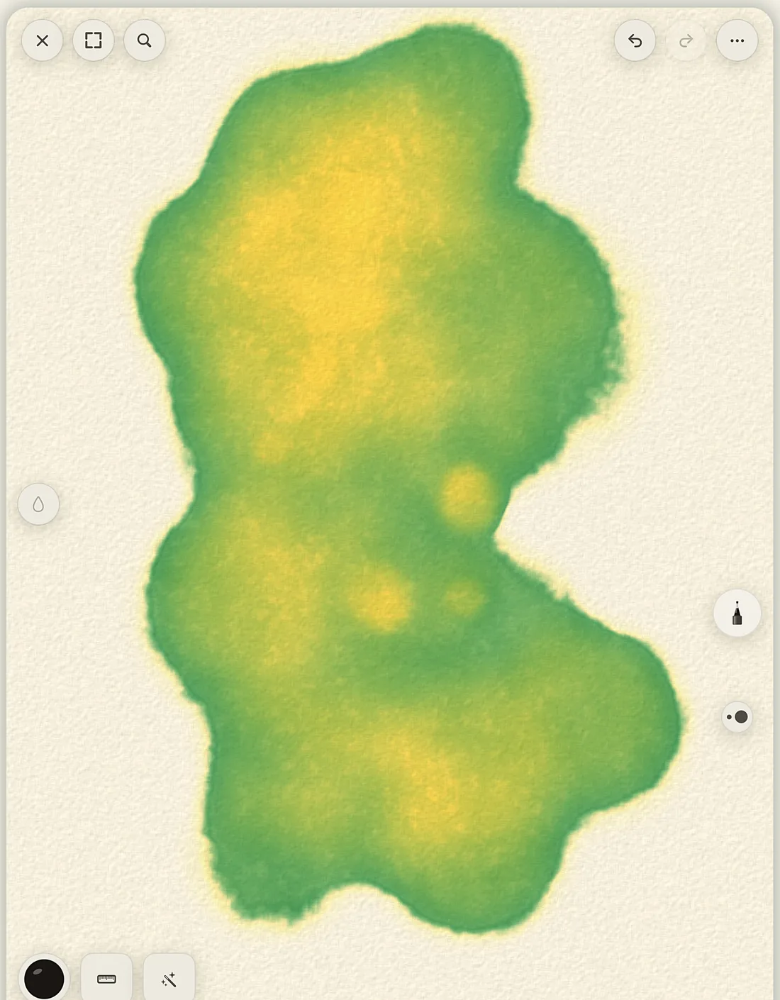
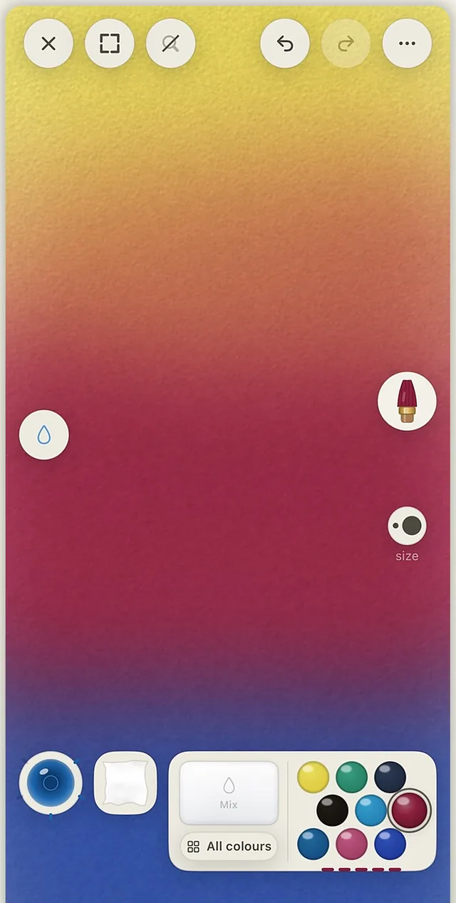

Real watercolor, finger-first
Real watercolor.
On your phone.
Not a filter, not a brush texture. A simulation of pigment and water: washes stay wet, colors bleed into each other, blooms spread while you watch, and a dry brush catches on the tooth of the paper.
Free. No account. iPhone and iPad.
Built for fingers
Every serious art app assumes a tablet and a stylus.
Line Lift is built for fingers, for the sofa, the café, the commute. The studio works the way a real one does: dip a pan of pigment, rinse the brush in the water bowl, dab it on the towel, mix two pigments in the tray. The supplies are the interface.

Really wet
Paint into water and watch it move.
Wet the whole sheet and paint into the standing water. Color creeps and feathers the way it does on cotton paper. Drop a second pigment into a wash that is still wet and the bloom spreads on its own. Let it dry, glaze over it, and the layers stack the way real washes do.
- Blooms, backruns and stacking washes
- Wet-the-sheet mode for the whole page
- Papers with real tooth, so a dry brush skips
36 pigments, named after the real ones
Pigments, not swatches.
Every color in Line Lift is a pigment with its own behavior. French Ultramarine and Burnt Sienna granulate and settle into the paper. Phthalo Blue and Permanent Rose stain flat and even. All of them are free. The six on a fresh install are the classic split primaries.
- Winsor Lemon
- Indian Yellow
- Cadmium Red
- Alizarin Crimson
- French Ultramarine
- Phthalo Blue

The studio
No menus pretending to be art supplies.
There is a water bowl, a towel, a mixing tray and a row of pans. Dip, rinse, dab, mix. The brushes are the ones a watercolor painter reaches for, not a library of presets.
- A broad hake for laying washes
- A sponge for skies, clouds and lifted texture
- A fineliner, and a reservoir pen with a finite ink load
- Washi tape and a craft knife: mask an edge, cut a shape, peel back to clean paper
Paint with sound on. Every stroke is synthesized in real time: the wet drag of a loaded brush, the dry whisper of a thirsty one.




It can start on paper
Your ink, lifted off the page.
Draw with real ink on real paper. Point the camera at it, and Line Lift lifts the linework off the page so you can lay watercolor under your own drawing without losing it. The wobble stays. Nothing is retraced.
- Lift from the camera, a scanner, or an imported photo
- Keep a reference photo beside your work, or trace over it on the lightboard
- Or skip the paper and start on a blank sheet

Sketchbook
Every session saves a version.
Your work lives in notebooks you flip through. Each time you open a piece and paint, a new version is saved and the original is left alone. The earlier ones stay in the book.
- A time-lapse of every painting as it came together
- iCloud backup of your sketchbook, in your own iCloud
- Full export and undo
iPad and Apple Pencil
Room to spread out.
On iPad the desk gets wider. Apple Pencil pressure and rotation are supported, and never required. Everything works with a finger.

- Price
- Free. Everything in this version.
- Account
- None. No ads either.
- Your artwork
- Stays on your device and in your own iCloud. It never passes through our servers.
- Analytics
- Anonymous, hosted in the EU. The details are in the privacy policy.
- Devices
- iPhone and iPad. Apple Pencil optional.
- Made by
- One designer, in Sweden.
Line Lift
With Apple for review.
Line Lift has been submitted to the App Store. This page gets the download link the day it clears. Until then, the support page is the way to reach us.
Questions? SupportiPhone and iPad. Free.